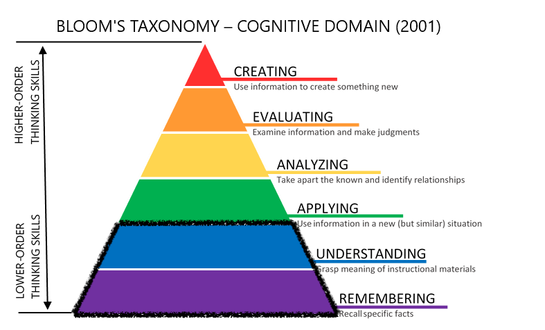
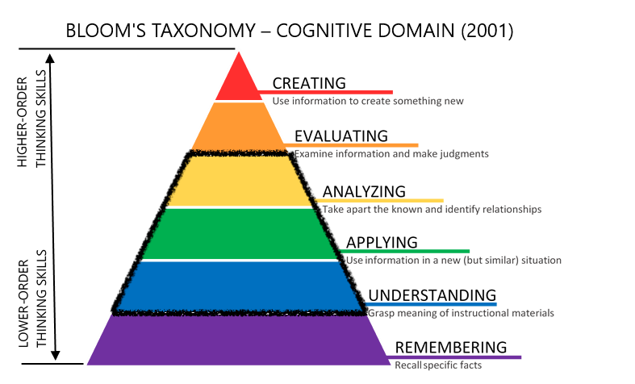
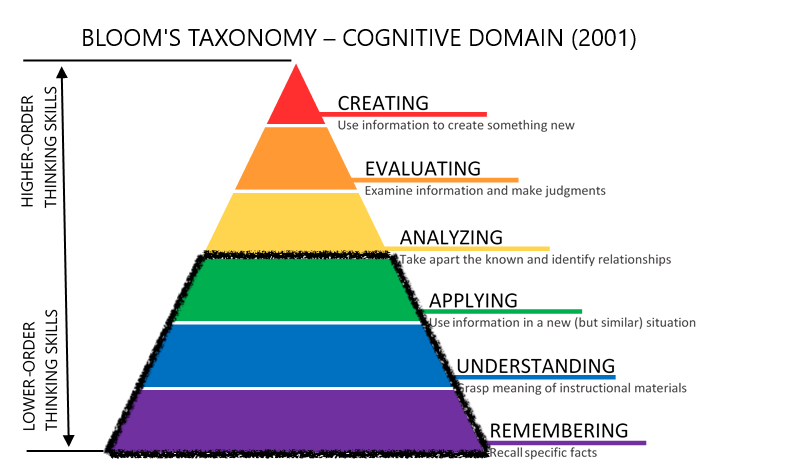
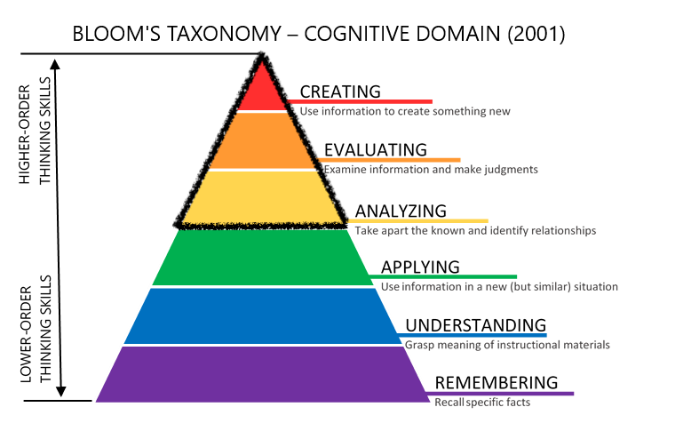

mindmap
root((CSCI 0200))
)**Module 1**(
(Logic)
(Propositional logic)
(Boolean algebra)
(Circuit design)
(Sets)
(Set Operations)
(Logical quantifiers)
)**Module 2**(
(Relations)
(Functions)
(Equivalence Relations)
(Proof Techniques)
(Direct)
(Indirect)
(Contradiction)
(Induction)
(Weak)
(Strong)
)**Module 3**(
(Counting)
(Sum and product principles)
(Permutations and combinations)
(Combinatorial proofs)
(Recurrence Relations)
(Asymptotics)
(Divide and combine)
)**Module 4**(
(Probability)
(Distributions)
(Conditioning)
(Random variables)
(Expectation)
(Graphs)
(Special graphs)
(Trees )
(Cycles)
(Algorithms)
Syllabus
Welcome to CSCI 0200: Math Foundations of Computing! In this course, we’ll study how to think about computation using mathematics. Historically, computer science emerged as a subfield of mathematics before “growing up” into its own discipline. Math remains one of the fundamental tools we use to solve advanced problems. You might know to expect mathematical reasoning in core theory courses like Theory of Computation (CSCI 0301) and Algorithms and Complexity (CSCI 0302), but you’ll also draw on mathematical thinking in courses like Artificial Intelligence (CSCI 0311), Programming Languages (CSCI 0313), Network Science (CSCI 0442), Machine Learning (CSCI 0451), Computer Graphics (CSCI 0461).
Core Learning Objectives
- You will solve problems using logic, set theory, recurrence relations, combinatorics (counting), graphs, and discrete probability.
- You will apply the above topics to complex problems in computer science and beyond.
- You will write mathematical proofs that allow you to be certain of a mathematical fact or a statement about an algorithm.
- You will perform computational experiments and contextualize your findings against mathematical theory.
- You will develop habits of reflection, collaboration, and persistence for learning theoretical topics.
Tentative Sequence of Topics
Weeks 1-3: Course introduction, logic, set theory
Weeks 4-6: Proof techniques, induction, functions, relations
Weeks 7-9: Counting, recursion, introductory analysis of algorithms
Weeks 10-13: Graphs, probability
Our detailed schedule includes prep, warmup problems, and due dates for assignments. I commit to ensuring that this schedule is always up to date at least two weeks ahead of the present day.
Logistics and Key Highlights
| Scheduled Class Periods |
Mondays, Wednesdays, and Fridays 75 Shannon Street, Room 202 Section A: 8:40am-9:30pm Section B: 9:45pm-10:35pm |
||||||
| Instructor |
Phil Chodrow
|
||||||
| Assistant Laboratory Instructor |
Smith Gakuya
|
||||||
| Assistant In Instruction (ASI) |
Noah Rizika
|
||||||
| Course Assistants | TBD | ||||||
| Key Highlights |
Our detailed course schedule contains information on required readings, warmup problems, and other assignments. I encourage you to call me “Prof. Phil” or “Phil.” “Professor Chodrow” is also fine if that’s what’s most comfortable for you. This is a flipped class. This means that we’ll introduce new content with videos, readings, and warmup problems ahead of class time. During class time, we’ll discuss questions, work complex examples, and try some practice problems. It’s very important for you to budget 1.5-2 hours for prep before each class. This class uses standards-based-grading. You don’t have an “average” in this class, just a series of checkboxes you can tick off as you complete and receive feedback on assignments. The boxes you tick off determine your final grade. I anticipate that 9-12 hours of total effort each week (including class time) will be sufficient for most students to earn a B or above. You are very welcome to email me about matters related to your experience in the course, but please do not email me math questions. Instead, post your questions on EdStem. Student Hours are your time to come chat with me about course content. I want to see you in Student Hours. You need a laptop and an internet connection for this course, but you don’t need to buy any books or other supplies. |
Class Format
Flipped Class
CSCI 0200 is a flipped classroom. This means that our scheduled class periods will primarily be time for you to actively practice and get feedback. Your first introduction to new material will be through assigned readings, videos, and warmup problems.
- On Mondays and Wednesdays, you will watch videos, complete readings, and do warmup problems before class. In class, we’ll discuss some of your questions from the warmups and work together on practice problems.
- On most Fridays, you will watch videos, complete readings, and do warmup problems before class. During class, you’ll work in groups on Lab assignments. You’ll complete the Lab assignments outside of class and turn them in.
- On four Fridays during the semester, you will complete a quiz in which you demonstrate your learning of our Learning Targets.
Course Activities
CSCI 0200 is divided into four “modules,” each of which is three weeks long. Here’s the rough schedule that you can expect from a module:
gantt
title A CSCI 0200 Module
axisFormat %A
tickInterval 1day
section Week A
Prep, warmup :active, a1, 2014-01-06, 1d
Class :2014-01-06, 1d
Prep, warmup :active, a2, 2014-01-08, 1d
Class :2014-01-08, 1d
Prep, warmup :active, a1, 2014-01-10, 1d
Lab A :a3, 2014-01-10, 1d
section Week B
Prep, warmup :active, a1, 2014-01-06, 1d
Class :2014-01-06, 1d
Prep, warmup :active, a2, 2014-01-08, 1d
Class :2014-01-08, 1d
Prep, warmup :active, a1, 2014-01-10, 1d
Lab B :a3, 2014-01-10, 1d
Lab A due :done, b3, 2014-01-10, 1d
section Week C
Prep, warmup :active, b1, 2014-01-06, 1d
Class :2014-01-06, 1d
Prep, warmup :active, b2, 2014-01-08, 1d
Class :2014-01-08, 1d
Lab B due :done, b3, 2014-01-10, 1d
Quiz :crit, done, c3, 2014-01-10, 1d
Most days, you’ll prepare with videos and readings, and then complete warmup activities. These activities will prepare you for either class (practice, discussion), or lab. We’ll have our quiz roughly every third Friday.
Rationale
The overall format of CSCI 0200 is designed to help you apply the ideas and skills of the course to progressively higher stages of Bloom’s taxonomy of cognition (Anderson and Krathwohl (2001)).
Anderson, Lorin W, and David R Krathwohl. 2001. A Taxonomy for Learning, Teaching, and Assessing: A Revision of Bloom’s Taxonomy of Educational Objectives: Complete Edition. Addison Wesley Longman, Inc.

Before Class: Warmups

Warmups are here to help you remember and understand new material. Each day, you’ll prepare for class by watching videos, completing readings, and solving a small number of relatively short warmup problems. You’ll then submit your solutions on Gradescope. You’ll get feedback on your solutions from our graders. Your warmup solutions are expected to show effort but are not graded for correctness.
Class on Mondays and Wednesdays: Questions, Activities, and Discussion

By the time you’ve completed the warmups and made it to class, I’m expecting that you have already made some effort to remember and understand the new material for that day. During class time on Mondays and Wednesdays, we’ll usually start with some time to discuss questions you might have from the day’s readings, videos, or warmups, to help build your understanding. Then, we’ll usually have time to work on problems in groups, or to further discuss topics. These activities will help you build your abilities to apply the material and use it to analyze more complicated problems.
Quizzes (Every Third Friday)

On quizzes, you’ll demonstrate your ability to remember, understand, and apply key ideas and skills. We’ll have four quizzes throughout the semester. On each quiz, there will be one problem related to each of the learning targets that we have introduced in the course so far. We’ll introduce new Learning Targets on each quiz. There will be a total of 20 Learning Targets throughout the semester.
You are not expected to complete every problem on every quiz. Correctly completing 3-4 problems on each quiz is a good pace and positions you well for the final exam.
Labs (Every Other Friday)

In labs, you’ll build your abilities to analyze , evaluate, and create using the tools and topics from this class. We’ll have lab assignments in 7 weeks (skipping the weeks in which we have quizzes). You’ll start on lab assignments in groups in class on Fridays. You’ll complete the remaining problems and prepare your report, submitting the entire result as a typed PDF.
Labs are due one week after the day we start them in class.
You may continue to work on your report with classmates, but your report should be written by you and reflect your own understanding of the material. A good heuristic: discussion and work at the whiteboard is great to share, but typed solutions or code should not be shared.
Labs are assessed on a 4-point rubric. After receiving your assessment on your lab report, you may revise and resubmit your report for a higher assessment.
Assessment and Grades
Warmups
Warmups are not graded for correctness. The two grades you can receive are “Complete” or “Incomplete/Missing.” A grade of Complete means that you made good effort on the problems and that your attempt demonstrates at least partial understanding of the reading and videos. Most days, 1.5-2 hours of prep time will usually be sufficient for you to complete the readings, videos, and warmups.
Yes, I know, this is a lot of prep. On the other hand, the lab reports are your only homework assignments.
Quizzes
Quiz problems are assessed as Satisfactory (S) or Not Yet Satisfactory/Incomplete (NS). To earn an S on a quiz problem, you must complete the entire problem correctly, modulo minor errors unrelated to the learning goals of the course (like arithmetic typos).
There is no partial credit given on quiz problems. Solutions with minor errors that are otherwise demonstrate learning earn an S, while solutions that demonstrate important misunderstandings (or are not attempted) earn an NS.
Once you have earned an S on a quiz problem, you have completed the corresponding Learning Target. You never need to attempt another quiz problem corresponding to that target. So, if you earn an S on an L3 problem on Quiz 1, you should not try an L2 problem on Quiz 2. Although you are going to have many more than this number of problems placed in front of you, it is sufficient to earn an S on a total of 18 problems in order to earn an A in the course.
Labs
Submitted lab reports can receive one of four assessments:
Here is some more detail on lab grades.
- Excellent (E): the lab exhibits complete understanding of the material and meets all requirements for mathematical content, coding, and expository writing. This report could serve as an exemplary solution for the assignment.
- Meets Expectations (M): the lab exhibits almost complete understanding of the material and meets most technical requirements. This report suggests that you have room to improve, but you understand the material well enough that you may potentially find it a better use of your time to move on.
- Needs Revision (R): The lab exhibits some understanding of the material, but there are major issues that should be fixed before moving on.
- Not Completed (N): The lab isn’t really complete enough to demonstrate understanding of the material.
Revising Labs
After receiving feedback on your lab report, you may revise it in response to the feedback and resubmit it for a higher assessment. You can do this once for each lab report. The due date for revisions will depend on exactly when our grading time can finalize the first round of assessments, but will usually be about two weeks after you get your first round of feedback.
Your Final Grade
Your final grade in the course will be determined by the bundle of Learning Targets and Lab assessments you achieve by the end of the course, according to the following table. To earn the given grade, you need to meet all requirements for both Learning Targets and Labs.
| Tier | Learning Targets (out of 20) |
Labs (out of 7) |
|---|---|---|
| A | At least 18 |
|
| B | At least 14 |
|
| C | At least 12 |
|
| D | At least 10 |
|
I reserve the right to modify this table, but only in ways that make it easier to achieve each grade tier.
Partial Completion
When you completely meet both requirements for one tier and completely meet one requirement for a higher tier, you earn the “+” version of the lower tier grade. For example, you may completely meet the requirements of a B on Learning Targets and completely meet the requirements of an A on Labs. In this case, the lower tier is a B and you earn the “+” version, so: a B+.
Assessment of Warmups
You can miss at most three warmups without penalty. After the first three missing warmups, your grade will lower by 1/3 of a letter grade for every two missing warmups. For example, an A would become an A-, a B+ would become a B, a B- would become a C+, etc.
In more detail, the penalties are:
- 0-5 missing warmups: -0
- 6-7 missing warmups: -1/3
- 8-9 missing warmups: -2/3
- 10-11 missing warmups: -1
- etc.
Late Work Policies
Warmups
Extensions are never given on warmups unless under guidance from the DRC. Remember that you can miss up to three warmups without any impact on your final grade in the course.
Labs
For each lab report, you may receive an extension of up to 3 days (72 hours) from the original due date. To do so, you should fill out this modified due date request form. You can count on receiving such an extension without a negotation if you:
- Request the extension at least one day (24 hours) in advance of the original due date.
- Write short but thoughtful responses to the questions posed in the form.
Labs that are turned in after the due date (or possibly the extended due date) will still be accepted and assessed. However, these late lab reports will count as your second submission, and the assessment you receive on that lab report will be final.
Quizzes
You can reschedule quizzes under the following circumstances.
- You have an emergency related to your health, mental health, or wellbeing, or the health, mental health, or wellbeing of your loved ones. No documentation is needed – just let me know.
- You are traveling for a major athletic event. In this case, you must notify me at least two weeks in advance. Please notify me by email and cc your coach. Usually, athletic conflicts will result in you taking the quiz a day or two early.
Inclusion, Access, and Participation
I commit to an inclusive, accessible, participatory, and safe classroom for CSCI 0200.
Disabilities and Clearing Barriers
For legal reasons, I am prohibited from offering accommodations to students who do not present letters of accommodation from the DRC. So, get a letter if you need it!
If any aspect of this course raises barriers to your full and equitable participation, it is my job to clear those barriers. A common way in which barriers arise is from unintentional failure to design for all students, including students with disabilities. I’ve done my best, but still may have fallen short! If you have a documented disability, please send me your letter of accommodation from the Disability Resource Center as soon as possible. You do not need to describe your disability or justify your accommodations. I will incorporate your accommodations and work to clear learning barriers to the best of my ability.
If you believe that you may have a disability, please contact the Disability Resource Center as soon as possible. The DRC works with students confidentially and never discloses disability-related information to faculty without your permission.
Academic Support
No matter who you are, it’s normal to feel challenged by your courses. We have many academic resources to support your success in CSCI 0200. I strongly encourage everyone to make use of all of these resources.
- My Student Hours are time for you to come talk with me about any aspect of the course. We’ll usually hold Student Hours in the big lounge outside Room 224 (the one with the windows).
- Experienced CS students hold Peer Help hours most weekday evenings. These sessions are great times for you to work on Warmup problems (before class) and lab reports. You can also ask general questions about course content and connect with other students.
- Our Assistant in Instruction (ASI) is Smith Gakuya. Smith holds regular Student Hours many days, and is prepared to help you in CSCI 0200. Smith can also help you arrange tutoring for long-term academic support.
- EdStem is our online Q&A forum. It’s the best place to ask questions at irregular hours. It’s a good idea to check EdStem frequently, because your question may already have been answered there!
Classroom Environment
Inclusion, access, and participation are collective projects. I expect all students to contribute to a healthy course environment.
We embrace diversity of age, background, beliefs, race, ethnicity, gender, gender identity, gender expression, national origin, religious affiliation, sexual orientation, and other apparent and non-apparent axes of identity. Discrimination is not tolerated in CSCI 0200. Discriminatory speech or acts may lead to engagement with the Community Standards Office.
You deserve to be addressed in the manner that reflects who you are. I welcome to tell me your pronouns and/or chosen name at any time, either in person or via email. I expect all students to address each other according to their expressed gender markers, and commit to doing the same.
You deserve to fully and equitably participate in our learning environment. I commit to ensuring that the materials and assessments in this course are accessible to all students, and I welcome feedback on where I can do better. Middlebury’s Disability Resource Center can help you remove barriers to learning in this and other courses.
You deserve a learning environment free from gender-based discrimination, sexual harassment, sexual assault, domestic violence, dating violence, and stalking. If you experience these behaviors or otherwise know of a Title IX violation, you have many options for support and/or reporting. Middlebury’s Civil Rights and Title IX Office (CRTIX) can help you navigate your options. Please be aware that I am a Responsible Employee, which means that I am required by the College to report incidents of sexual harassment or sexual violence to CRTIX. There are resources for emotional and mental health care, advocacy, and academic support listed here, some of which are confidential.
We Can Help You Borrow a Laptop
An especially important resource for access in many courses in the Department of Computer Science is a functioning laptop. If you ever find yourself temporarily in need of a laptop, we have 10 rotating Windows laptops that we can loan you. To request a laptop for short-term use (like a single class period), email me as soon as possible.
On Long-Term Use: College policy has changed recently to include the expectation that every student have a laptop available. The college provides laptops to those who need them where “need” is based on Student Financial Services calculations. If you anticipate needing a laptop for the whole term, we encourage you to inquire with Student Financial Services and the library first due to our smaller pool of equipment. If, however, the College will not be able to meet your needs in a timely fashion, please reach out to us so that we can work out a long-term laptop loan.
Collaboration and Academic Integrity
The guiding principle of Middlebury’s Honor Code is that work you represent as your own must reflect your learning and understanding. Submission of work that does not reflect your learning and understanding may lead to grade penalties or Honors proceedings.
Collaborating with Integrity
Collaboration is welcome in some settings in this course. In all instances of collaboration, you should acknowledge your collaboration partner(s) and describe their contributions as part of your assignment submission.
- Warmups: collaboration is discouraged because I think warmups are useful as practice for the quizzes. If you do collaborate on warmups, you should acknowledge your collaboration partner in your submission.
- Labs: collaboration is encouraged (and partially mandatory). You’ll start labs in collaboration groups. You’re free to complete the assignment in your groups, or to complete the assignment on your own. All students should turn in an individual submission that reflects their own understanding and which acknowledges the contributions of their collaboration partners.
- Quizzes: collaboration is prohibited.
- In-class activities: collaboration is encouraged (and sometimes mandatory).
- General study: collaboration is encouraged!
About ChatGPT
What Is It?
ChatGPT is an example of a large language model (LLM). LLMs aim to produce helpful, human-like text with a combination of two major mechanisms:
- LLMs use next-token prediction to predict the next entries in a sequence of text by using the previous entries. This enables them to mimic human-produced text. So, if you saw the sequence “I love Math Foundations of _____”, you might guess that the next word might be “Computing” and that it’s probably not “Pineapples.”
- LLMs are trained using reinforcement learning with human feedback (RLHF) to produce sentences that are not just realistic but also helpful, nonoffensive, or accurate. They do this using a multistage training process that involves humans rating the quality of candidate texts.
ChatGPT and similar LLMs are shaping many conversations in education at Middlebury and beyond.
While LLMs may have many benefits, they are also the subject of routine deception by powerful, motivated actors. They are powered by massive quantities of low-paying, traumatizing labor. LLMs and automation more generally are furthering labor instability, contributing to reduced wages, and are concentrating the power of a small number of large tech companies.
In This Class
- Work that you submit in this class must demonstrate your learning and understanding. Copy/paste from LLMs like ChatGPT does not do this, and is consequently a violation of academic integrity.
- You are discouraged from using ChatGPT in any way on warmups. The reason is that warmups help you prepare for the quizzes; if you don’t practice on the warmups, you’ll do worse and get a lower grade.
- Quizzes are in-class assessments on which electronics are prohibited. This implies that ChatGPT is prohibited on quizzes.
- You are free to consult ChatGPT (or other LLMs) when studying and when completing lab reports. If you do, you must treat ChatGPT as an unverified source. This means:
- You must cite your source.
- You must describe the contribution of the source to your submitted writeup.
- You may paraphrase but may not quote ChatGPT.
- You must describe what steps you have taken to check that your learning involving ChatGPT is indeed correct.
- You are always personally responsible for the accuracy, quality, and integrity of your work.
Beyond This Course
General Advice
I am always happy to talk with you about your future plans, including internships, research opportunities, and graduate school applications. Because I am a creature of the academy, I am less knowledgeable about industry jobs, although you are welcome to ask about those too. You can drop in during Student Hours or email me to make an appointment.
Letters of Recommendation
Writing letters of recommendation for students is a fundamental part of my job and something that I am usually very happy to do. Here’s how to ask me for a letter.
© Phil Chodrow, 2024